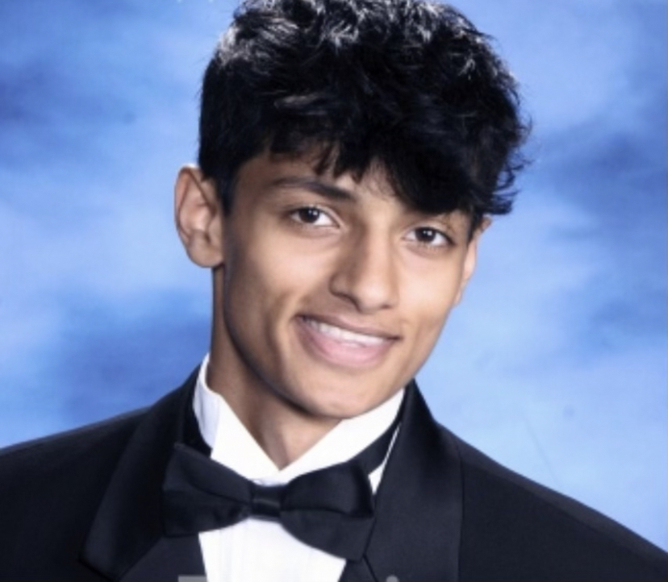
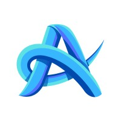
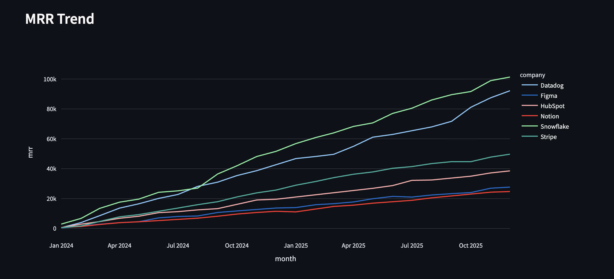
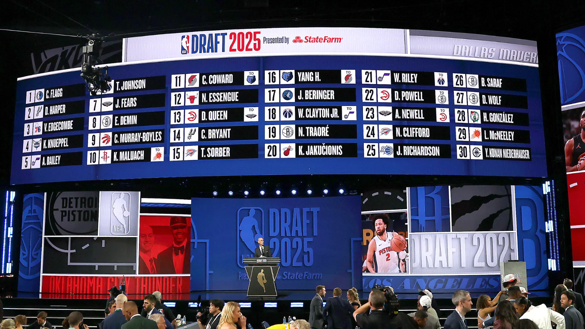

Open to full-time roles · May 2027
AI Engineer.
AI Engineer.
Data Analyst.
Data Science senior at Michigan. I build LLM pipelines, ETL systems, and the analytics that keep them honest.

~60%less onboarding effort via AI pipeline
100K+records/week through data pipelines
$10B+purchasing data analyzed
50+prosthetics shipped, Good Karma Eng.
Skills
Highlighted = used in production
AI & ML
LLM app development
Vision LLMs
Claude API
Computer vision
Model evaluation
Human-in-the-loop
Data Engineering
Python
SQL
ETL pipelines
DuckDB
MySQL
Distributed systems
Backend & Cloud
FastAPI
Docker
AWS
GCP / Cloud Run
CI / testing
Pydantic
Analytics
Streamlit
Plotly
R / Shiny
KPI frameworks
Dashboards
Excel / Sheets
Languages
PythonSQLC/C++R
Workflow
GitJiraLinuxStakeholder interviews
Experience
Tap to expand
NO Nano OpsAI Engineer · Boston Jun – Aug 2026 ▾
- Built a vision-LLM pipeline that turns product photos + SKUs into structured listings — listing time from ~5 min to under 2.
- Designed human-in-the-loop checks on SKU, serial, quantity, condition, and material fields before publish.
- Interviewed suppliers and contractors; turned pain points into requirements that drove a pivot to surplus inventory.

AfterQuery ExpertsData Analyst · Ann Arbor
Aug 2025 – Present
▾
- SQL + Python pipelines over 100K+ weekly user interaction records; reporting turnaround down ~30%.
- Analyzed completion, errors, and drop-off to find product friction and inform UX changes.
- Built reusable reporting tables and KPI frameworks for stakeholders.
Academic AnalyticsData Analyst · New York Jun – Sep 2025 ▾
- Analyzed $10B+ in institutional purchasing data for vendor concentration and unusual spend.
- Flagged ~$1–2M in cost-saving opportunities with specific vendors and categories.
- Automated Python reporting and built dashboards; report-generation time down ~40%.
Projects
Tap to expand
RV ReStock VerifyAI listing-verification API · Python, FastAPI, Claude API, Docker 2026 ▾
- Vision LLM extracts structured listings from photos + SKUs, with Pydantic-validated output and a deterministic risk-tiering engine.
- Labeled eval harness at 100% category and condition accuracy; tests, linting, CI, Docker for Cloud Run.
SG SaaS Growth Analytics DashboardPython, SQL (DuckDB), Streamlit, Plotly 2025 ▾

- Funnel, cohort retention, churn, and MRR from 55k+ events on a DuckDB staging layer.
- Found referral/organic signups activate at 61–67% vs. 43% for social.
NBA NBA Prospect Evaluation ToolR, Shiny 2025 ▾

- Scouting dashboard for shot quality, zone efficiency, and player comparisons.
NFL NFL Penalty Margin & Win AnalysisR, Shiny 2024 ▾
- 2018–2023 play-by-play: penalty margin vs. win rate, z-score outliers, home/away splits.
Let's build something.
Ann Arbor / Long Island · open to relocation